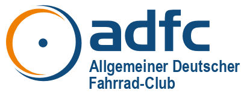

Allgemeiner Deutscher Fahrrad-Club e.V. (ADFC)

Hamburg, 1.10.23
Dieses Meet System wurde vom ADFC Hamburg aus der Not heraus wegen der Covid-Pandemie für verschiedene Bundesverbände ehrenamtlich zur Verfügung gestellt. Wir freuen uns, dass jetzt der ADFC (Bundesverband) eine neue Lösung professionell betreut und für alle ADFC Gliederungen kostenlos zur Verfügung stellt.
Wir stellen deshalb diese alte Lösung ein. Bitte aktualisiere deinen Adresseintrag zu:
Sofern du mit einem direkten Link zu einer Konferenz auf dieser Seite gelandet bist, und wenn der Name deiner Konferenz auch auf dem neuen System unverändert ist, könnte auch diese Adresse jetzt direkt dorthin führen:
Wir werden diese Informationsseite spätestens am 01.06.24 abschalten!!